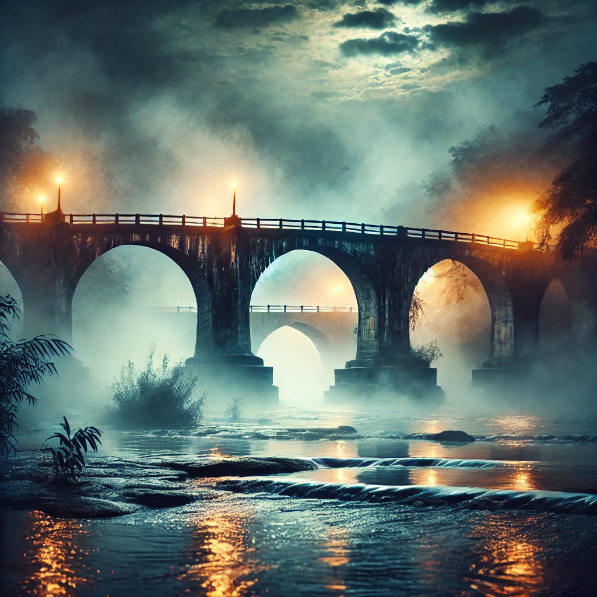

Елена беше художничка, която не просто рисуваше картини – тя създаваше светове. Всеки щрих на четката ѝ разказваше история, всяка смес от цветове беше като магия, която съживяваше невъзможното. В нейните платна можеше да се види любов, която съществува отвъд времето, звезди, които шепнат тайни, и сенчести кътчета на човешката душа, които рядко биват осветени от дневната светлина. Тази вечер, в търсене на вдъхновение, тя реши да се разходи до един от най-старите мостове в покрайнините на града. Това място винаги я привличаше със своята тайнственост – древните камъни, излъскани от времето и стъпките на безброй минувачи, носеха спомени за неизброими истории. Над реката се носеше лек мъглив воал, а водната повърхност отразяваше нощното небе като разлято мастило със златисти проблясъци от уличните лампи. Беше от онези нощи, в които светът изглеждаше като сън. Луната висеше над хоризонта като огромен светещ фенер, а вятърът шепнеше думи, които човек не можеше да разбере, но усещаше с кожата си. Елена се облегна на парапета на моста, извади скицника си и започна да рисува. Ръката ѝ сякаш се движеше сама, очертанията на пейзажа се появяваха с лекота, но мислите ѝ бяха далеч – блуждаеха в търсене на нещо неуловимо. Изведнъж тя чу стъпки зад себе си. Тихи, премерени, но достатъчно отчетливи, за да ѝ привлекат вниманието. Обърна се бавно и погледът ѝ срещна този на непознат мъж. Беше висок, облечен в тъмни дрехи, а камера висеше на кожена лента около врата му. Очите му блестяха с необяснима дълбочина – смесица от любопитство, меланхолия и нещо неуловимо, което сякаш криеше тайна. Той се усмихна – топло, но загадъчно, сякаш се радваше, че я вижда, без да я познава. – Често ли идваш тук? – попита той с глас, който имаше особена мекота, сякаш думите му се плъзгаха в нощния въздух като вълни по спокойна вода. Елена го погледна внимателно. В обикновена ситуация би се поколебала да отговори, но тази вечер всичко беше различно. Думите му звучаха естествено, сякаш не бяха непознати, а стари приятели, които просто са се забравили за известно време. – Не толкова често, колкото ми се иска – отвърна тя, усмихвайки се леко. – Но винаги, когато имам нужда да избягам от реалността. Той кимна, сякаш разбираше напълно чувството. – Аз също идвам тук, когато търся нещо, което не мога да опиша. Мястото има своя магия, нали? – Да – съгласи се Елена, прокарвайки пръсти по ръба на скицника си. – И вдъхновява… Ти си фотограф? Той погледна камерата си и се усмихна едва забележимо. – По-скоро ловец на моменти. Казвам се Марко. – Елена. – Тя подаде ръка, а той я стисна с лекота. В допира му нямаше настойчивост, но и нещо в начина, по който я задържа за миг повече от необходимото, накара кожата ѝ да настръхне. Така започна разговорът им – непринудено, но сякаш отдавна чакащ да се случи. Говореха за изкуството, за нощта, за начина, по който светлината може да промени всичко – една картина, една снимка, дори самата реалност. Марко разказваше за миговете, които фотографията му запечатва, а Елена споделяше как понякога рисунките ѝ не са това, което е искала да създаде, а това, което платното е искало да ѝ покаже.Докато часовете се нижеха, светът около тях се размиваше в мека, ефирна тъкан от сенки и светлина. Двама непознати, които сякаш се познаваха от друго време, от друг живот. А може би тази среща беше просто началото на нещо, което вече се е случило – само че в някоя друга реалност, някъде на границата между съня и истината.
